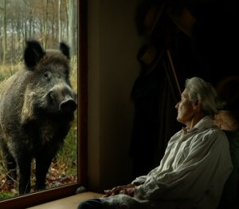

Va, Toto! (Go, Toto!)

Pierre Creton
FR
2017 – 94 min
Internationale Premiere
Prix
Institut Français de la Critique en Ligne
B: Pierre Creton– K: Léo Gil Mela – S: Ariane Doublet – T: Michel Bertrou – V: Andolfi, Arnaud Dommerc (JHR Films)
Mit Pierre Creton, Vincent Barré, Evelyne Didi, Françoise Lebrun
Zeit für Animal Studies! Ein Wildschweinfrischling wächst in einem Wohnhaus im normannischen Weiler Bréauté-Beuzeville auf. Aus der kunstvollen Mischung von Dokumentation und Fiktion entsteht ein feinsinniges und humorvolles Meisterwerk mit den Tieren vom Land: Katzen, Kühe, Kröten, Hühner, Hunde und das Wildschwein werden zu echten Helden in einem Film, in dem auch ein Jäger keine unbedeutende Rolle spielt.
sonntag 8 okt 11.00 uhr theatiner
filmkunst
Pierre Creton * 1966, lebt und arbeitet in Vattetot-sur-Mer, Normandie. Abschluss an der Schule der Bildenden Künste in Le Havre. Seit 1995 arbeitet er regelmäßig auf Milchhöfen, in der Bienenzucht, Milchlaboren und auf den Feldern. Die meisten seiner Dokumentar- und Spielfilme umkreisen essayistisch seine landwirtschaftliche Tätigkeit. Neben seinen filmischen Arbeiten macht er Fotografien und Zeichnungen, die in Galerien ausgestellt und von der Regional Art Collection, Haute Normandie, gesammelt werden.
Filme Détour suivi de Jovan from Foula 2005 (2. UX) – L’Arc d’Iris – Souvenir d’un jardin 2006 (, mit V. Barré, 2. UX) – L’heure du Berger 2008 (3. UX) – Sur la voie 2013 – Petit traité de la marche en plaine (mit V. Barré), 2014 – Sur la voie critique 2017 – Va, Toto! 2017